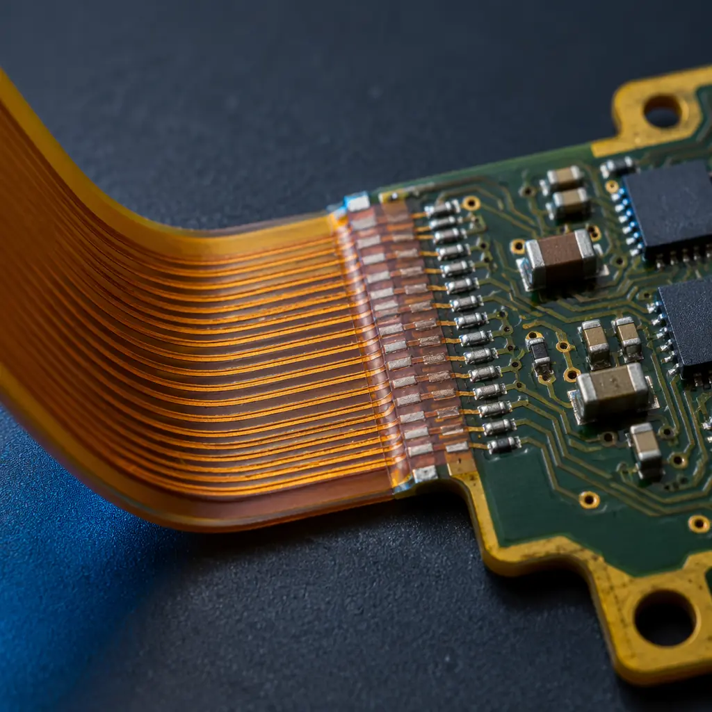
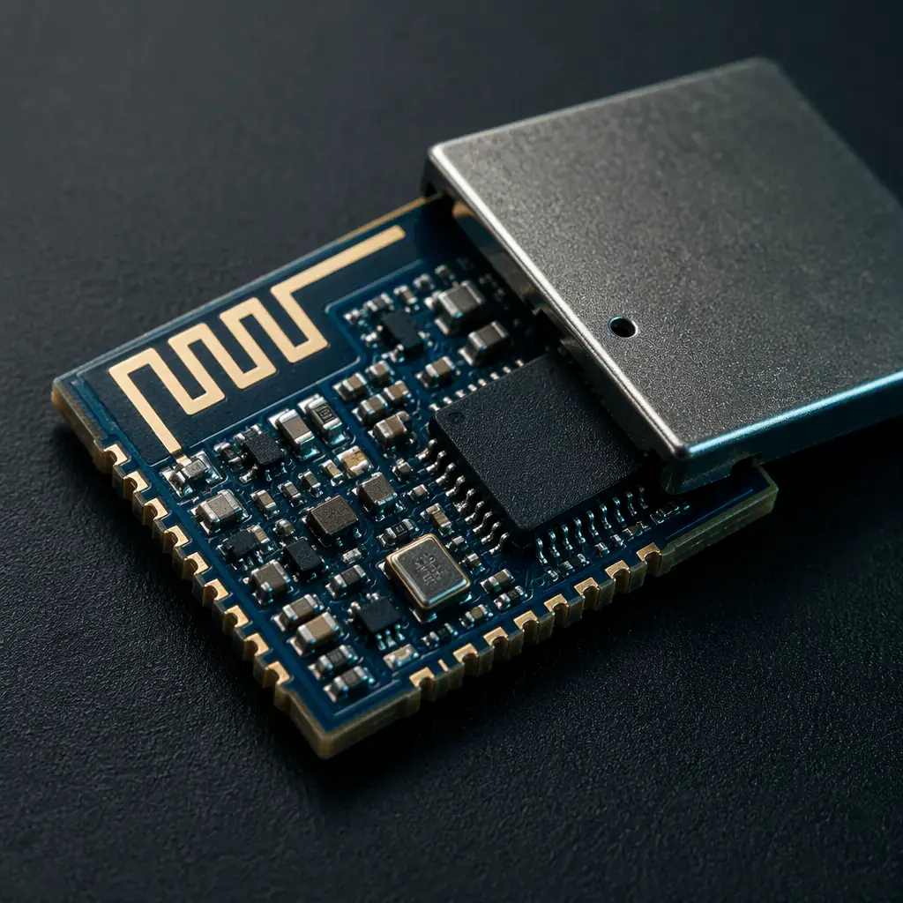
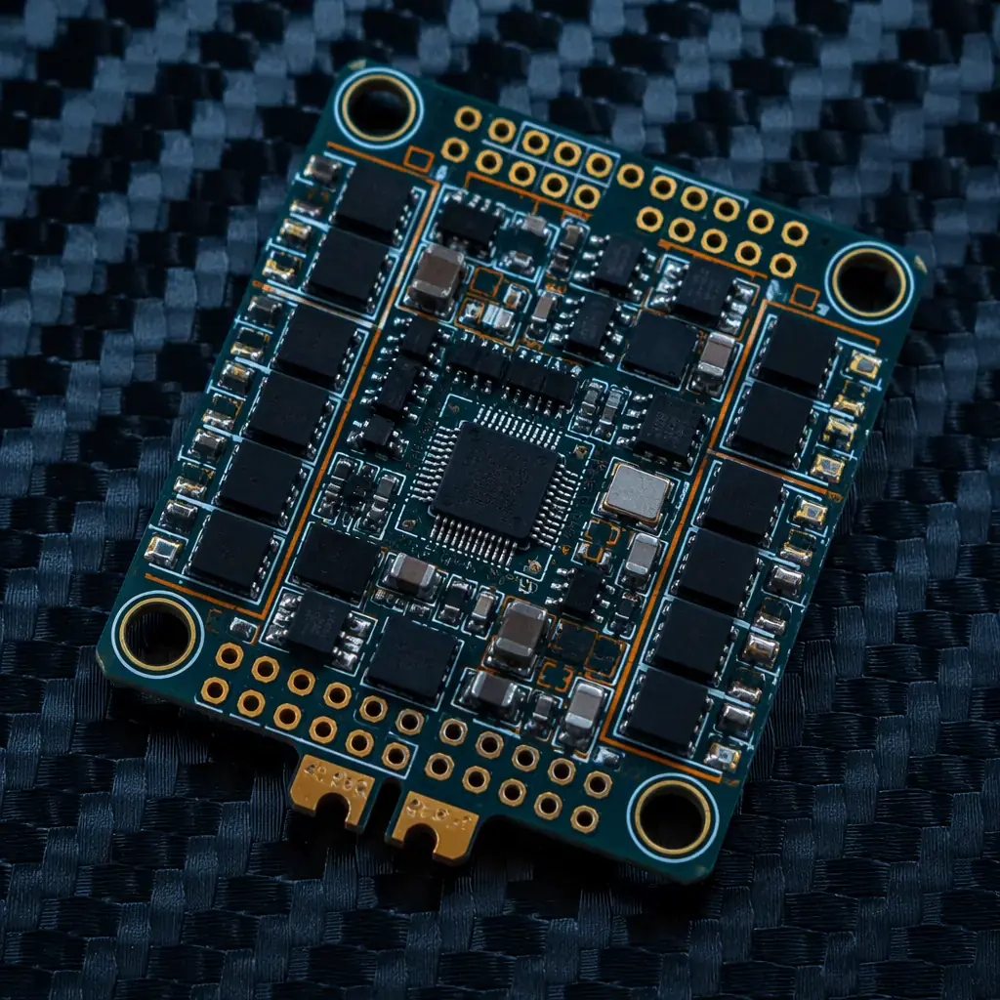
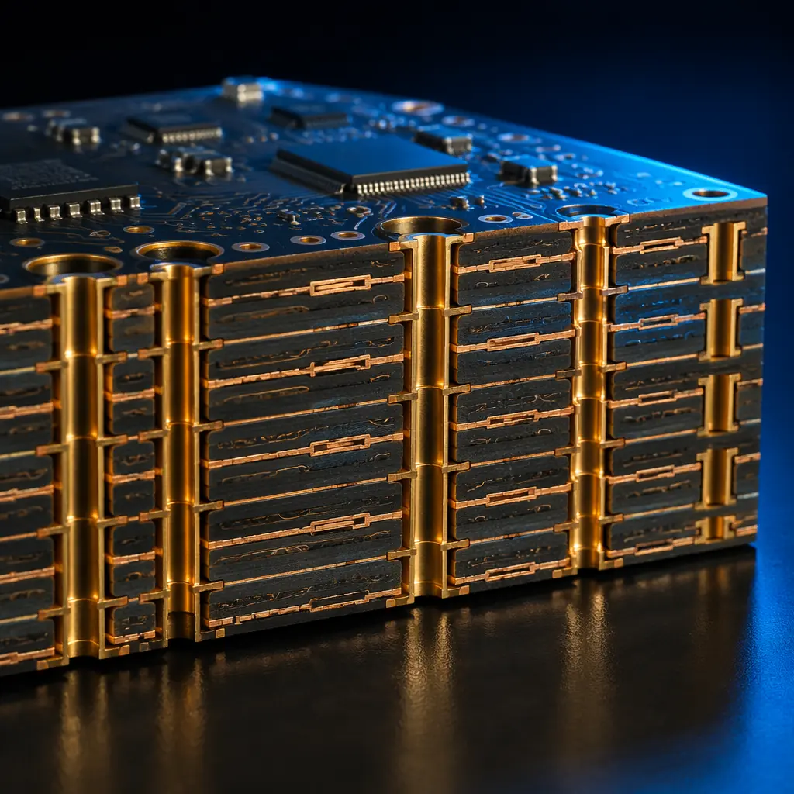

The consumer electronics PCB market operates on a fundamentally different axis than automotive or industrial segments. Here, miniaturization doesn't just mean "smaller boards" — it means 3/3mil trace/space on 0.4mm-thick 8-layer HDI stacks with 0.3mm-pitch BGAs and 0201 passives, all shipped at volumes of 50,000 to 500,000 units per batch. The procurement challenge isn't finding a supplier who can build it; it's finding one whose yield economics work at consumer price points while maintaining the precision of IPC Class 2+ workmanship across 5,000 panels a month.
This guide breaks down the three highest-growth consumer electronics sub-segments — wearables, smart home devices, and drones — and maps their PCB requirements to specific manufacturing capabilities. Every specification point is backed by production data from an IATF 16949-certified facility with HDI any-layer interconnect, 32-layer capability, and 6oz heavy copper options.
Why Consumer Electronics PCBs Are a Different Specification Class
An automotive ECU PCB is designed for a 15-year lifecycle at -40°C to +125°C with zero field failures tolerated. A consumer wearable PCB is designed for an 18-month product cycle at 0°C to +45°C, but it needs to be 60% smaller, 40% lighter, and cost one-tenth as much to produce — all while surviving drop tests, sweat exposure, and daily flex cycling. These are not the same engineering problem.
Key metric: Consumer electronics PCBs account for an estimated 38% of global PCB production by area but only 22% by value — meaning yield optimization and panel utilization are the difference between a profitable line and a loss-making one. At Huaxing PCBA, our 8-line SMT floor achieves 98.7% first-pass yield on consumer-grade assemblies, driven by automated optical inspection on 100% of boards and SPI on every solder paste deposit.
| Parameter | Industrial PCB | Consumer Electronics PCB |
|---|---|---|
| Typical lifecycle | 10–15 years | 12–36 months |
| Layer count | 4–12 layers | 4–10 layers (HDI) |
| Board thickness | 1.6mm standard | 0.4–1.0mm |
| Min. trace/space | 4/4mil typical | 3/3mil (HDI required) |
| Component density | Moderate | Extreme (0201, 0.3mm BGA) |
| Volume per batch | 500–5,000 | 10,000–500,000 |
| Quality standard | IPC Class 3 | IPC Class 2 (enhanced) |
| Cost sensitivity | Medium | Extreme |
| Form factor | Standard rectangular | Irregular, flex, rigid-flex |
Wearable PCBs: The Miniaturization Frontier

Smartwatches, fitness bands, hearables, and medical wearables push PCB miniaturization to its physical limits. A typical smartwatch mainboard is 25mm × 18mm — roughly the size of a postage stamp — yet carries a multi-core application processor, Bluetooth/Wi-Fi module, PMIC, 6-axis IMU, heart-rate sensor front-end, NFC controller, and flash memory. Achieving this requires 8-layer any-layer HDI with laser-drilled microvias (0.075mm minimum diameter) and stacked via structures to route signals through 6–8 buildup layers.
3/3mil The minimum trace/space required for routing a modern smartwatch SoC within a 25×18mm footprint. At Huaxing PCBA, this is a standard process parameter, not a special-order capability.
Flex-to-rigid transitions: Fitness bands and smart rings add a mechanical challenge — the rigid PCB section that houses the processor must transition seamlessly to a flexible tail that routes to the display, battery, and sensors. This is where rigid-flex PCB technology becomes non-negotiable. A well-executed rigid-flex design eliminates up to 3 board-to-board connectors, saving 1.2–1.8mm in Z-height and removing potential failure points in drop-impact scenarios.
Specify laser-drilled microvias, not mechanical
At 0.3mm pad diameters with 0.075mm drill sizes, only laser drilling achieves the required precision and aspect ratio. Mechanical drilling bottoms out at ~0.15mm, which forces larger pad sizes and wastes routing area on already space-constrained boards.
Request cross-section analysis for stacked microvias
Stacked via structures in any-layer HDI are the most common failure point in wearable PCBs. Insist on microsection reports for each new stackup — a single cracked via barrel at the 2–3 interface can cause intermittent BGA opens that pass ICT but fail in the field after 3 months of wrist movement.
Design for 0201 placement from day one
If your wearable BOM includes 0402 passives, you're leaving 63% of the board area on the table. 0201 components (0.6mm × 0.3mm) are the de facto standard for wearables, and your manufacturer needs 0201-capable placement machines with <±25µm accuracy. Huaxing's 8 SMT lines are specked for 0201 placement at full speed — not a niche capability but a daily production reality.
Procurement teams evaluating wearable PCB suppliers should also verify substrate material options. Standard FR-4 is usable for entry-level devices, but mid-to-premium wearables increasingly spec Rogers 4350B or Megtron 6 for their lower dielectric loss (Df 0.0031–0.004 at 10 GHz), which improves Bluetooth and Wi-Fi signal integrity through the densely routed HDI stack.
Smart Home PCBs: RF Performance at Consumer Price Points

Smart speakers, Wi-Fi mesh nodes, smart thermostats, and IoT sensor hubs share a common PCB architecture: an RF front-end on one corner of the board, a digital section with an application processor and flash, and a power management section with multiple regulated rails. The engineering tension is between RF isolation requirements (which push for larger ground planes and spacing) and consumer cost targets (which push for smaller boards and fewer layers).
±5% The impedance control tolerance required for 50-ohm RF traces at 2.4 GHz and 5 GHz. Consumer-grade boards that skimp on impedance control produce Wi-Fi modules that pass factory QA but fail RSSI thresholds after enclosure assembly — a return-rate disaster that costs far more than the per-board savings.
For smart home devices with multiple radios (Wi-Fi + BLE + Zigbee + Thread), antenna placement and isolation become the dominant PCB design concern. A 6-layer stackup with dedicated RF ground layers on L2 and L5 is the minimum viable configuration for co-located 2.4 GHz radios. At 4 layers, measured isolation between adjacent antenna ports drops below 15 dB, causing receiver desensitization that degrades range by 30–40%.
One often-overlooked factor in smart home PCB procurement is DFM for consumer volumes. A design that works perfectly on 50 prototype boards may have a 12% yield loss at 50,000 units because of a single DFM issue — a via placed too close to a board edge for depaneling, a BGA pad with insufficient solder mask clearance, or a test point that can't be probed by the ICT fixture. The per-unit cost of catching these issues at NPI is roughly $0.03; the per-unit cost of finding them in production is $1.80 in rework and scrap.
Drone PCBs: Lightweight, Rigid, and High-Speed

Consumer and prosumer drones — from camera quadcopters to FPV racing drones — impose a unique set of PCB requirements that no other consumer segment combines: sub-gram weight budgets, high-current motor drivers (15–40A per ESC channel), sensitive IMU and GPS receivers, 4K/8K video data paths, and extreme vibration environments. A drone flight controller is simultaneously a power board, a high-speed digital board, and an analog sensor board, all on a single 4-to-6-layer stackup weighing under 8 grams.
2oz–3oz Copper weight required for ESC (Electronic Speed Controller) power stages in mid-range camera drones. At 3oz, the effective trace width for a 25A motor channel at 30°C rise is 3.8mm — manageable on a 35mm × 35mm board, but only with proper thermal via arrays (minimum 16 vias per MOSFET pad, 0.3mm drill) stitching the copper pours across all layers. SMT assembly on heavy-copper boards requires a reflow profile with extended soak time (90–110 seconds above 180°C) to ensure even heat distribution across the copper mass.
The weight constraint is unforgiving. A 1.6mm standard-thickness 4-layer board with 1oz copper weighs approximately 4.8g for a 35mm × 35mm footprint. Moving to 0.8mm thickness with 1oz copper drops that to 2.4g — saving 2.4g that translates directly to flight time on a 250g-class drone where every gram matters. But 0.8mm boards warp more during reflow, requiring specialized pallet fixturing and tighter process control on the SMT line. This is a manufacturing capability filter: if your supplier doesn't have thin-board reflow experience, expect 5–8% warp-related yield loss on the first production run.
Miniaturization Roadmap: What Changes at Each Volume Tier

Procurement teams planning consumer electronics programs need to understand how PCB manufacturing strategy shifts across volume tiers. The right approach at 5,000 units is wrong at 500,000 — and the transition points are specific and predictable.
| Volume Tier | Recommended Stackup | Key Manufacturing Consideration |
|---|---|---|
| 1K–10K (NPI/Pilot) | 6–8L standard HDI, laser vias | Panel-sharing to minimize per-unit tooling cost; accept lower panel utilization (60–70%) |
| 10K–100K (Ramp) | 8L any-layer HDI, stacked vias | Dedicated panels with 85%+ utilization; automated optical inspection on 100% of boards |
| 100K–500K (Volume) | 8–10L any-layer HDI, blind + buried | Multi-up panelization with fiducial optimization; SPI becomes mandatory on every paste deposit |
| 500K+ (Mass) | mSAP (modified semi-additive process) | Trace/space below 2/2mil requires mSAP; laser direct imaging replaces traditional photolithography; supplier must have mSAP line experience |
At 500K+ annual volumes, the economics shift toward mSAP (modified semi-additive process), which enables trace/space down to 15/15µm (sub-mil) — essential for next-generation wearables and ultra-compact IoT modules. However, mSAP requires a fundamentally different capital equipment set (laser direct imaging, flash etching, horizontal plating lines) and only a subset of HDI-capable factories have made this investment. When your roadmap points toward mSAP volumes, validate your supplier's HDI and mSAP capabilities at least two product cycles before the transition.
Consumer PCB Testing: What's Worth Paying For
Consumer electronics operate at IPC Class 2 workmanship standards — but the smart procurement strategy is to apply Class 2+ criteria selectively, not across the entire board. Blanket Class 3 adds 15–25% to per-board cost with diminishing returns on a device with an 18-month lifecycle. The four testing regimes worth the incremental spend:
100% AOI — non-negotiable at any volume
Automated optical inspection on every board catches solder bridging, missing components, and polarity errors before they reach functional test. At consumer volumes, even a 0.5% escape rate means 250 defective units per 50,000-batch that reach end customers. AOI ROI is immediate.
SPI (Solder Paste Inspection) — mandatory above 100K units
Solder paste volume variation is the #1 root cause of intermittent BGA failures in consumer devices. SPI measures every paste deposit and flags volume deviations before reflow — preventing defects rather than detecting them post-facto. Cost: roughly $0.004 per board at volume.
X-Ray for BGAs and QFNs — required for 0.4mm pitch and below
Optical inspection cannot see under BGA packages. For fine-pitch BGAs (0.4mm and below) common in wearables, X-ray inspection is the only way to verify solder joint integrity. Sample-based X-ray (5–10% of boards) is acceptable below 50K units; 100% X-ray becomes cost-effective above 100K.
Environmental stress screening — sample-based for wearables
Drop-test 20 boards per batch from 1.5m onto concrete (6 faces, 3 drops each). Thermal-cycle 10 boards through -20°C to +70°C for 48 hours. Sweat-simulate 5 boards (salt spray, 72 hours). These tests cost under $500 per batch and catch design margin issues that field returns would expose at 100× the cost.